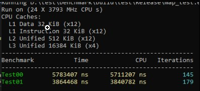
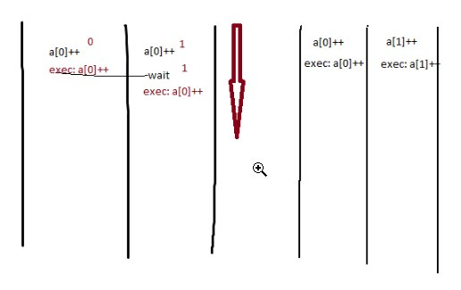
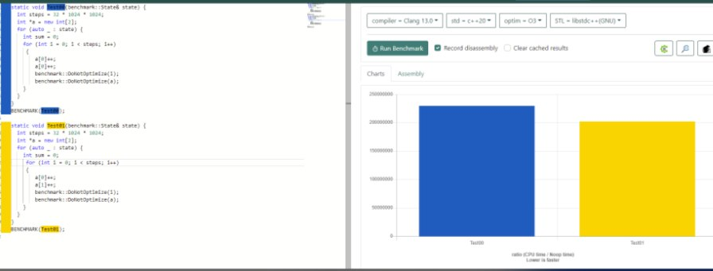

В мире программирования существует огромное количество багов, и если бы каждый баг стал бабочкой, то программеру в раю уже давно оставлена пара полян для развития навыков энтомолога. Несмотря на все совершенства этого мира: компиляторы, pvs-studio и другие статические анализаторы, юниттесты и отделы QA, мы всегда находим способы преодолеть преграды кода и выпустить на волю парочку новых красивых и удобных видов. Есть у меня txt файлик, которому очень много лет, и куда я складываю интересные экземпляры. Все примеры и действия описанные в статье вымышленные, ни один стажер, джун или студент уволены не были. Hello, World! Where are your bugs?
First…
Начну, пожалуй, с очепятки в коде. Этот код использовался в движке Unity 2014 для управления поворотом объектов с помощью гизмо (такой элемент управления, обычно в форме трех окружностей, который позволяет крутить объект на сцене). В данном случае, функция setDeltaPitch применяется для изменения угла наклона объекта относительно его вертикальной оси (pitch). При углах близких к 0 (зависело от настроек редактора) просто переворачивала объект вверх ногами, что очень бесило дизайнеров уровней.
void UObject::setDeltaPitch(const UMatrix &gizmo) {
....
if (_fpzero(amount, eps))
return
rotateAccum.setAnglesXYZ(axis);
....
}А где ошибка?
После return не стоит точки с запятой, что при определенных условиях приводило к вызову функции setAnglesXYZ в управляемом объекте и переворачивало его на произвольный угол.
Next…
А тут повеселился компилятор, эта функция использовалась для вычисления хеш-суммы данных в контенте при проверке целостности файлов. При создании контента вычислялся хеш файлов и сохранялся вместе с файлами. Позже, при загрузке того же файла, плеер юнити снова вычислял хеш файла и сравнивал его с сохраненным хешем, чтобы убедиться, что файл не был изменен или поврежден. Шифрование использовалось на финальном этапе упаковки. По замыслу автора этого кода, ключ не должен был утечь за пределы этой функции, но что-то пошло не так. Так как это асимметричная система шифрования, то любой, кто владеет закрытым ключом может зашифровать и подписать двоичные файлы. При загрузке эти файлы будут выглядеть «подлинными». Наличие части утекших исходников Unity и этого бага в движке помогло SKIDROW в 2017 поломать Сибирь 3 и еще несколько больших игр на этом движке, которые использовали нативные средства шифрования контента. Там конечно был еще Denuvo, но его кедры научились обходить еще до этого.
void UContentPackage::createPackage(dsaFile *m, const void *v, int size) {
unsigned char secretDsaKey[3096], L;
const unsigned char *p = v;
int i, j, t;
....
UContent::generateDsaKey(secretDsaKey, sizeof(salt));
....
// тут какойто код был, работали с переменными
// шифруем и подписываем файл
....
memset (secretDsaKey, 0, sizeof(secretDsaKey));
}А где ошибка?
Функция memset() не вызывалась из-за агрессивной оптимизации компилятора, действия с secretDsaKey не проводились после memset() поэтому компилятор её просто выкинул. Все содержимое ключа оставалось на стеке.
Next…
А тут могут быть проблемы при работе из двух и более потоков с любой из переменных a/b. Эта ошибка присутствовала в движке CryTek при синхронизации стейта автомобилей по сети, из-за чего наблюдались рывки и телепорты при передвижение на авто в мультиплеере FarCry 1. Чем больше игроков было на карте, тем больше была вероятность телепорта у последнего игрока, при 16 игроках на карте, последнего стабильно телепортило если он использовал авто.
struct X {
int a : 2
int b : 2
} x;
Thread 1:
void foo() { x.a = 1 }
Thread 2:
void boo() { x.b = 1 }А где ошибка?
Нарушение атомарности операции записи. Поля a и b не являются атомарными, что означает, что они могут выполняться частично и прерываться другими операциями. В данном коде присутствует общий доступ к комплексной переменной AB, которая состоит из двух двубитовых частей. Но компилятор не может выполнить такие присвоение атомарно, захватывая сразу байт ab и битовыми операциями выставляя нужное значение. Это может привести к гонкам данных и неопределенному поведению в многопоточной среде.
foo(): # @foo()
mov AL, BYTE PTR [RIP + x] ; разорваное присвоение 1
and AL, -4 ; разорваное присвоение 2
or AL, 1 ; разорваное присвоение 3
mov BYTE PTR [RIP + x], AL ; закончили упражнение
ret
boo(): # @boo()
mov AL, BYTE PTR [RIP + x]
and AL, -13
or AL, 4
mov BYTE PTR [RIP + x], AL
retNext…
Этот код содержит гонку даже при наличии «вроде бы живого» мьютекса. Ошибка была замечена в прошивке Nintendo Switch 4.5.1 и выше. Наткнулись мы на неё совершенно случайно, когда пытались ускорить создание атласов ui текстур на старте игры. Если пробовали загрузить в атлас больше 100 текстур, то ломали её. А если меньше то атлас собирался нормально. Такие мьютексы зомби на свиче до сих пор не пофикшены. А еще на свиче, можно было сделать не больше 256 мьютексов на приложение, вот такая вот веселая система.
const size_t maxThreads = 10;
void fill_texture_mt(int thread_id, std::mutex *pm) {
std::lock_guard<std::mutex> lk(*pm);
// Access data protected by the lock.
}
void prepare_texture() {
std::thread threads[maxThreads];
std::mutex m;
for (size_t i = 0; i < maxThreads; ++i) {
threads[i] = std::thread(fill_texture_mt, i, &m);
}
}А где ошибка?
Мы удаляем мютекс сразу по завершению функции prepare_texture(). Операционная система никак не реагирует на неактивный мютекс, потому что как объект ядра продолжает еще некоторое время жить и адрес является валидным и содержит корректные данные, но не предоставляет реальной блокировки тредов.
Next…
Функции могут быть определены так, чтобы принимать на месте вызова больше аргументов, чем указано в объявлении. Такие функции называются (variadic) вариативными. C++ предоставляет два механизма, с помощью которых можно определить вариативную функцию: шаблон с переменным числом параметров и использование многоточия в стиле C в качестве окончательного объявления параметра. Очень неприятное поведение было встречено в популярной библиотеке для работы со звуком FMOD Engine. Код привожу в том виде, какой он был в исходниках, похоже ребята хотели сэкономить на шаблонах. (https://onlinegdb.com/v4xxXf2zg)
int var_add(int first, int second, ...) {
int r = first + second;
va_list va;
va_start(va, second);
while (int v = va_arg(va, int)) {
r += v;
}
va_end(va);
return r;
}А где ошибка?
В этой вариативная функции в стиле C для сложения ряда целых чисел аргументы будут считываться до тех пор, пока не будет найдено значение 0. Вызов этой функции без передачи значения 0 в качестве аргумента (после первых двух аргументов) приводит к неопределенному поведению. Более того, передача любого типа, кроме int, также приводит к неопределенному поведению.
Next…
А вот тут мы опять ничего не залочили, хотя на первый взгляд залочили. Этот код был обнаружен в движке Metro: Exodus в некоторых местах при работе с ресурсами, что приводило к странным крашам. Нашли благодаря баг репортам и одному умному французу.
static std::mutex m;
static int shared_resource = 0;
void increment_by_42() {
std::unique_lock<std::mutex>(m);
shared_resource += 42;
}А где ошибка?
Это неоднозначность кода — ожидается, что анонимная локальная переменная типа std::unique_lock будет блокировать и разблокировать мьютекс m посредством RAII. Однако объявление синтаксически неоднозначно, поскольку его можно интерпретировать как объявление анонимного объекта и вызов его конструктора преобразования с одним аргументом. Компиляторы почему-то предпочитают второе, поэтому объект мьютекса никогда не блокируется.
Next…
А вот этот код был притащен в репо одним умным студентом, и как-то просочился на ревью между двух мидлов, похоже пьяные были. На поиски странного поведения потратили час. Студента отправили готовить всем кофф, и запретили комитить в пятницу вечером.
// a.h
#ifndef A_HEADER_FILE
#define A_HEADER_FILE
namespace {
int v;
}
#endif // A_HEADER_FILEА где ошибка?
Переменная v будет разной в каждом юните трансляции который его использует, потому что финальный код будет такой:
namespace _abcd { int v; } в файле a.cpp
и
namespace _bcda { int v; } в файле b.cppв итоге используя такую переменную нет уверенности в её текущем состоянии.
Next…
А вот такой код рандомно сбоил в релизной сборке на разных компиляторах, использовался для подсчета контрольных сумм областей в PathEngine. Солюшен для плойки содержал определенный флаг, который маскировал проблему, а на боксе его не было. Ошибку обнаружили, когда попробовали собрать либу клангом на пк.
struct AreaCrc32 {
unsigned char buffType = 0;
int crc = 0;
};
AreaCrc32 s1 {};
AreaCrc32 s2 {};
void similarArea(const AreaCrc32 &s1, const AreaCrc32 &s2) {
if (!std::memcmp(&s1, &s2, sizeof(AreaCrc32))) {
// ...
}
}А где ошибка?
Структура будет выровнена до 4байт, и между buffType и crc образуются мусорные байты, которые могут быть заполнены нулями, а могут мусором.
struct S {
unsigned char buffType = 0;
char[3] _garbage = {} // something, compiler don't care about content in release
int crc = 0;
};memcmp() сравнивает память побитово захватывая и мусорные биты тоже, поэтому получается неизвестный результат этой операции для s1, s2. Настройки компилятора для плойки, явно указывали компилятору забивать мусорные байты нулями. Правила C++ для структур говорят, что нам нужно использовать в этом месте оператор ==, и memcmp не предназначен для структур равенства.
Next…
Вдогонку к предыдущему, как-то раз на ревью было вот такое. Вовремя заметили.
class C {
int i;
public:
virtual void f();
// ...
};
void similar(C &c1, C &c2) {
if (!std::memcmp(&c1, &c2, sizeof(C))) {
// ...
}
}А где ошибка?
Сравнивать плюсовые структуры и классы через memcmp плохая затея, ведь может прилететь в c2 отнаследованный класс, с другой vtbl. А vtbl в классе лежит первой, поэтому эти классы никогда не пройдут проверку, даже если все данные будут идентичны.
Next…
Знаете зачем программисту два монитора? Чтобы на одном он мог смотреть на код, который только что сломал, а на втором код, который еще компилится.
А где ошибка?
Она где-то точно есть, кода без ошибок не бывает.
Next…
Тут вроде совсем просто должно быть, но что-то часто на таких вещах претенденты спотыкаются на собесах.
struct S { S(const S *) noexcept; /* ... */ };
class T {
int n;
S *s1;
public:
T(const T &rhs) : n(rhs.n),
s1(rhs.s1 ? new S(rhs.s1) : nullptr) {}
~T() { delete s1; }
// ...
T& operator=(const T &rhs) {
n = rhs.n;
delete s1;
s1 = new S(rhs.s1);
return *this;
}
};А где ошибка?
На строке 15 не проверили, что объект может быть присвоен сам себе. В итоге удалим себя, и загрузим какой-то мусор.
Next…
Даже в четырех строках кода можно словить неочевидный баг. Особенно, если это Unity Engine, который любит включать общие заголовки в разных DLL, а потом сравнивать их вот так super_secret() == super_secret(). Казалось бы, что может пойти не так, но секрет != секрету, и игра не грузится на Windows Phone.
// header a.h
constexpr inline const char* super_secret(void) {
constexpr const char *STRING = "string";
return STRING;
}
// a.dll
super_secret() == super_secret()
// b.dll
super_secret() != super_secret()А где ошибка?
А ошибка в том, что общий хедер a.h использовался в разных либах, все работало пока движок собирался как единая длл, а собрав две разные DLL, мы получим два разных адреса для STRING. А вообще ошибка в том, что строки сравнивают поинтерами, а не через strcmp.
Next…
Можно вечно смотреть как течет вода, горит огонь, и как работает сортировка.

Next…
Я настолько не доверяю компилятору, что проверяю даже что this != null. Знаете где я нашел этот код? Вы наверное догадались :) Unity Engine 2014 года выпуска, а может он и до сих пор там.
class URendererOpengl : URendererBase {
...
void commitDraw() {
if (this == nullptr) {
// WTF?
}
}
...
}
struct A {
int x = 0;
void bar() { std::cout << "bar" << std::endl; }
};
int main() {
A *a = nullptr;
a->bar();
}А где ошибка?
Формально ошибки нет, мы можем вызывать функции класса, не обращаясь к данным экземпляра этого класса. В этом конкретном случае у нас получается вырожденная функция класса.
Next…
Какой из циклов выполнится быстрее? Ключи компилятора для релиза в студии /GS /W4 /Gm- /Ox /Ob2 /Zc:inline /fp:precise. Думаю на кланге будет тоже самое.
int steps = 32 * 1024 * 1024;
int* a = new int[2];
1. for (int i = 0; i < steps; i++) { a[0]++; a[0]++; }
2. for (int i = 0; i < steps; i++) { a[0]++; a[1]++; }Так кто же быстрее?
Второй будет быстрее, из-за параллелизма команд на уровне cpu. Обе команды ++ попадают на выполнение одновременно, но в первом если компилятор не на мухлюет будет задержка по данным, пока выполняется первая операция ++. Но это происходит на уровне процессора уже, компилятор действительно здесь может только помухлевать с разворачиванием цикла и тд.



Next…
У этой функции может быть UB с переполнением буфера. Часто это происходит для clang с оптимизацией -O3, и не происходит с -O0. На кланге 12.10 и выше уже исправлено для всех режимов оптимизации. Код не мой, всплыл на каком-то из собесов, когда просто беседовали по душам.
char destBuffer[16] = {0};
void serialize(bool x) {
const char* whichString = x ? "true" : "false";
const size_t len = strlen(whichString);
memcpy(destBuffer, whichString, len);
}
int main() {
bool x;
serialize(x);
}А где ошибка?
Компилятор перехитрил сам себя. Итак, что происходит? Агрессивная оптимизация преобразует это в len = 5 - x, bool это не 1/0, он зависит от компилятора. Clang определяет это 0 — ложь, другое — правда. X не инициализирован, поэтому в некоторых случаях у нас len = 5–7? И вылетает в memcpy по переполнению буфера.
Next…
// Порадуйте мир сами новыми видами баgoчек :)
int main() {
printf("Hello, World! Where are your bugs?");
}Надеюсь вам понравилась эта небольшая коллекция. А чтобы знать и понимать разные виды этих насекомых, можно иногда поглядывать в правила хорошего кода.

Зачем программисту два монитора?
З.Ы. Продолжение тут.
← Все статьи